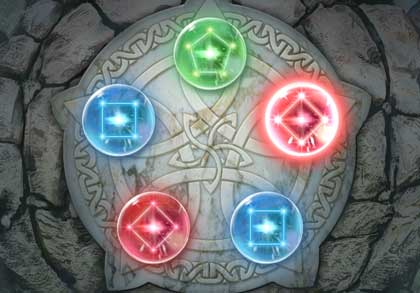

Resumen del comienzo
Un día como otro cualquiera, Celeste (nuestra protagonista), decide
probar un nuevo juego de ritmo que le ha recomendado un compañero de clase.
Una vez que decide echarle una ojeada, se acaba quedando toda la tarde jugando sin parar.
Parecía que todo iba correctamente, Celeste no quitaba los ojos de la pantalla y estaba arrasando
con los enemigos... sin embargo, tenía la extraña sensación de que parecían cada vez más reales,
y que cada vez se acercaban más a ella con cada paso.
Antes de que pudiera darle tiempo a reaccionar, le dieron un mazazo en la cabeza.
Y todo se hizo
oscuridad...
La profecía
Cuando Celeste despierta, se encuentra estando acostada en una cama muy cómoda.
A su lado se encuentra un anciano de aspecto amable, que le cuenta que su nieto Fausto la había encontrado
desmayada en un prado cercano.
Dicho anciano también le comentó que era igualita a la heroína de la que hablaban muchos libros antiguos,
una chica venida de otro mundo, destinada a acabar con la tiranía del malvado tirano de las tierras del norte.
Para ello, necesitaría unificar el poder mágico de 4 personas específicas en un solo hechizo, capaz de acabar con el señor de las sombras de una vez por todas.
Celeste casi se vuelve a desmayar...
